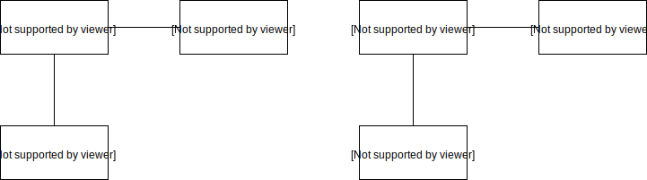

Unit Testing
Einführung
Was ich euch zeige
- Warum wird getestet?
- Was wird getestet?
- Wie wird getestet?
- Wer testet?
Warum?
- Funktionsfähigen Code schreiben
- Code-Qualität verbessern
=> Daraus ergeben sich folgende Möglichkeiten:
- Code Reviews
- Testen (händisch/automatisch)
Testverfahren
- Komponententest
- Integrationstest
- Systemtest
Was wird getestet?
- Unit-Test -> Komponente -> eine einzelne Funktion/Methode
- Integrationstest -> Ergebnis zusammenwirkener Funktionen
- Systemtest -> Das ganze System
Wer testet?
- Abhängig vom Testverfahren
- Entwickler / Fachbereich / Unabhängige Person
TDD
Test Driven Development - Extremfall
- Zuerst Tests schreiben, dann Code
- Alle Tests müssen am Anfang fehlschlagen
- Dann wird Code geschrieben, bis die Tests erfolgreich ablaufen
- Zum Schluss wird entweder der Code verbessert, oder zur nächsten Unit weitergegangen
Einfaches Beispiel für Unit Tests
Produktivcode
public bool IsValidExtension(string filename)
{
string extension = filename.Substring(filename.LastIndexOf("."));
if(extension.ToLower() == "ml")
{
return true;
}
return false;
}Tests für diesen Code
[Test]
public void IsValidExtension_uppercase_ReturnsTrue()
{
bool valid = file.IsValidExtension("myFile.ML");
Assert.IsTrue(valid);
}
[Test]
public void IsValidExtension_lowercase_ReturnsTrue()
{
bool valid = file.IsValidExtension("myFile.ml");
Assert.IsTrue(valid);
}
[Test]
public void IsValidExtension_ReturnsFalse()
{
bool valid = file.IsValidExtension("myFile.ms");
Assert.IsFalse(valid);
}Arrange - Act - Assert
Grundstruktur jedes Tests
[Test]
public void TestMethod1()
{
// Arrange
int a = 5;
int b = 7;
int expected = 5;
// Act
var actual = getMin(a, b);
// Assert
Assert.AreEqual(expected, actual);
}Wie viele Tests brauche ich?
- 1 Testfall pro Verhalten einer Funktion (Auch Sonderfälle, Randfälle, Fehlerfälle)
- 1 Testfall pro möglichem Codepfad
- 1 Testfall für jeden bekannten Bug
- Hilft beim Reproduzieren der Fehler
- Testet die Behebung des Fehlers
- Schützt davor, dass der selbe Bug nicht nochmal kommt
Wie viele Tests werden hier benötigt?
function doSomething(number) {
if(param == 0) {
return 0;
} else if(param > 0) {
return 1;
} else if(param < 0) {
return -1;
} else if(typeof number != number) {
throw "NaN!";
} else {
throw "ExplodeException";
}
}Fakes
Vollständig isoliertes testen ist nicht ohne Weiteres möglich! Darum gibt es:
- Stubs
- Mocks

Ziel von Fakes
- Externe Abhängigkeiten auflösen
- Vollständig isoliertes Testen ermöglichen
Stub
- Programmcode, der anstelle eines anderen Programmcodes steht
- Code der ersetzt wird wurde noch nicht entwickelt oder funktioniert noch nicht
- Gibt immer harte Werte zurück (getValue() gibt immer den Wert 5 zurück)
Ersetzung durchführen


Mock
- Nachgeahmtes Objekt im System
- Verifiziert, ob das zu testende Objekt mit dem Nachgeahmten korrekt kommuniziert
- Kontrolliert ob, wie oft, mit welchen Parametern, in welcher Reihenfolge welche Methoden aufgerufen werden
Beispiel
class ErrorLog
{
public string LastError;
public void LogError(string message)
{
LastError=message;
}
}
//Integrationtest!!
[Test]
public void TestLogError()
{
ErrorLog log = new ErrorLog();
FileSystemMaster master = new FileSystemMaster(log);
string s = master.openFile(@"C:\tmp\test.txt");
Assert.AreEqual("Datei nicht gefunden", log.LastError);
}
Vergleich
| Stub | Mock | |
|---|---|---|
| Fällt durch Tests | ❌ | ✔ |
| Kann immer harte Werte zurückgeben | ✔ | ✔ |
| Kann Übergabeparameter überprüfen | ❌ | ✔ |
| Prüft, ob Test fehlschlägt | ❌ | ✔ |
Frameworks und mehr!
Unit Test-Frameworks
Für (fast) jede Sprache gibt es ein/mehrere Unit Test-Frameworks
Oft verallgemeinert mit xUnit weil:
- Java - JUnit
- .NET - NUnit, MSTest
- C++ - CppUnit
- PHP - PHPUnit
Mocking-Frameworks
Nicht (immer) im Test-Framework enthalten
- Java - Mockito
- .NET - Moq, Rhino Mocks
- C++ - Google C++ Mocking Framework
100% Code Coverage?
- Nicht sinnvoll
- Zeitaufwendig
- U.u. nicht möglich
Weitere Informationen
- Anwendungsentwicklerpodcast (Episode 94)
- The Art of Unit Testing (mitp Verlag)
10 Regeln des Testens
- Teste immer nur EINE Sache
- Vermeide mehrere Asserts in einem Test
- Schreibe nicht ZU VIELE Tests
- Benenne Tests eindeutig
- Vermeide Logik in Tests
- Vermeide doppelten Code durch SetUp-Methoden
- Benenne Variablen sinnvoll
- Teste private Methoden nur, wenn wirklich notwendig
- Schreibe die Test Cases separat auf
- Schreibe sinnvolle Benachrichtigungen
PRAXIS!
In der Theorie sind Theorie und Praxis gleich.
In der Praxis leider völlig verschieden!